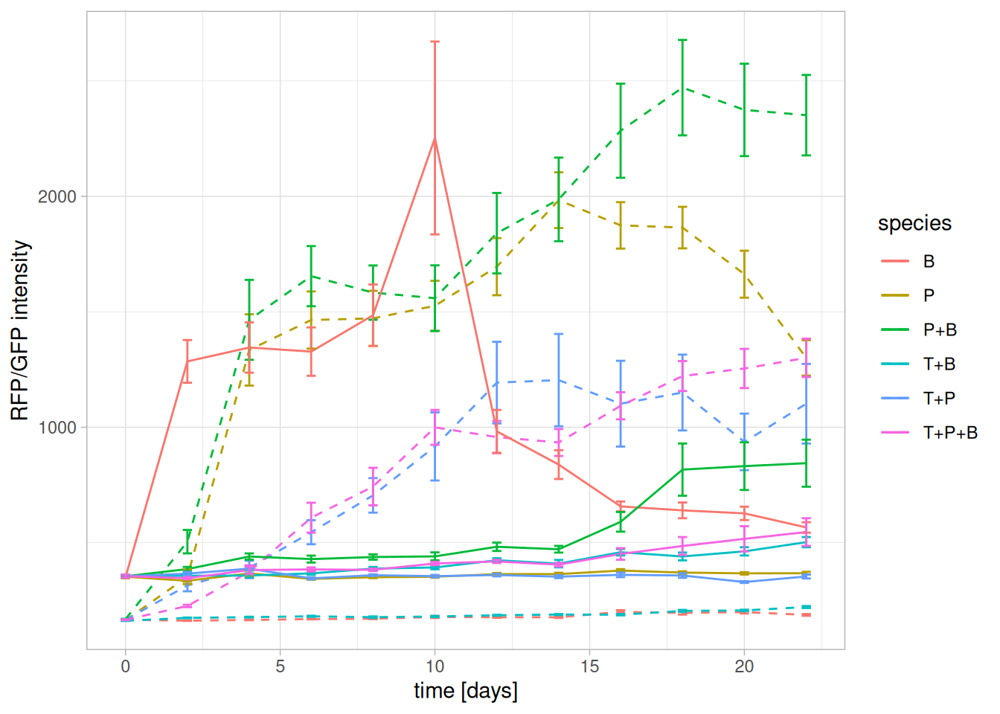
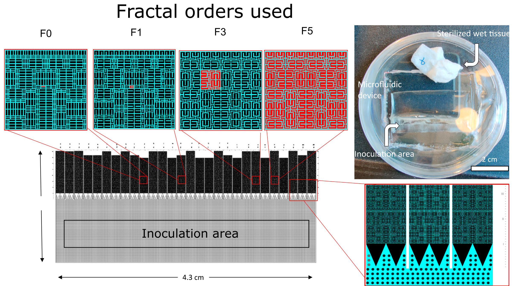
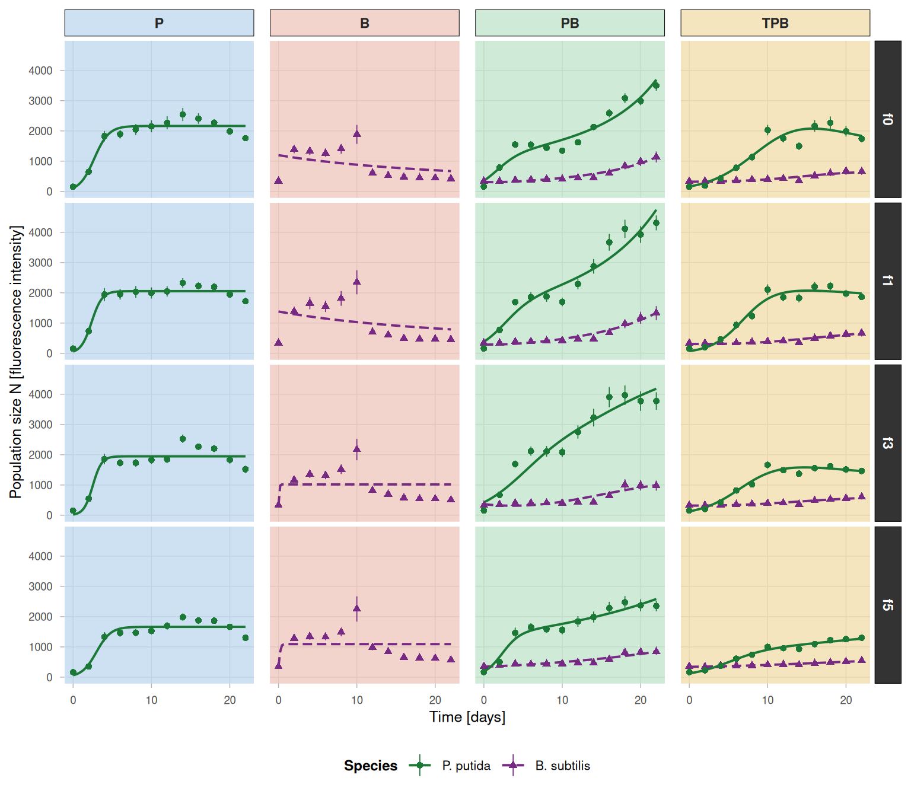
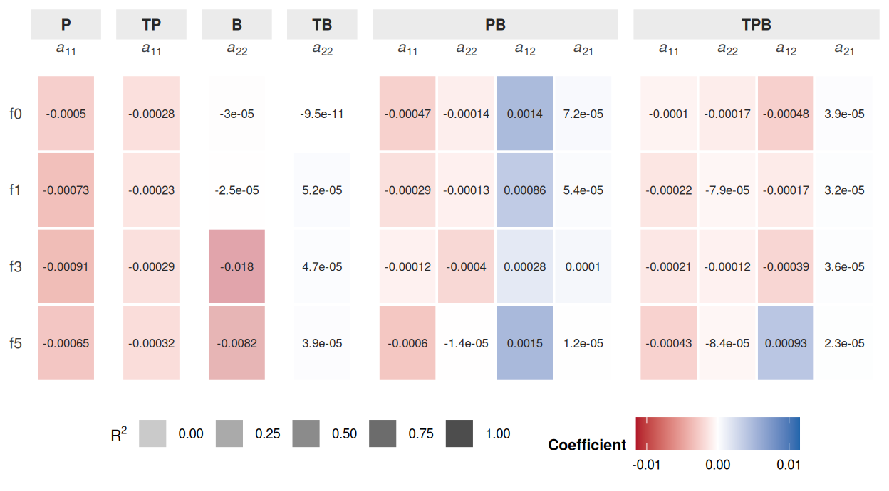

Lotka-Volterra modeling three species interaction using the gauseR package
1 Abstract
This is a practical project for the “Practical Course in Modelling and Systems Biology” (2026S 300332-1). The aim of the project is to implement a Lotka—Volterra model to analyse time series growth data of microbial co-culturing experiments, derive interaction coefficients and explore how this three-species interaction can be modeled from limited growth data availiability. With growth data only available for two of the species the three-species interaction is tryied to be modeled as a two-species interaction being perturbed by the presence of the third species. The R package gauseR (Mühlbauer et al. 2020) was employed to fit logistic growth curves to the experimental data and calculate interaction coefficients (\(a_{ii}, a_{jj}, a_{ij}, a_{ji}\)), growth rates (\(r\)) and carrying capacities (\(K\)).
2 Introduction
P. putida and B. subtilis are often co-isoloated from soil samples and T. viride is also a common member of soil microbial communities. Therefore all three species therefore thought to be stably coexisting in (soil) habitats with high spatial complexity.
The treatments, different microspatial structures, consist of dead-end mazes based on space filling Hilbert curves50 of four different fractal orders with a normalized internal volume.
The overal aim is to see whether the experimental data can be properly represented by a Lotka-Voltera model and investigate if that approach is a viable method to narrow in on mechanistic insights to the interactions of this three species model in a spatially structured habitat.
From the literature it is known, that P.p. and B.s. are frequently co-isolated from soils but cannot coexist in a well mixed environment under lab conditions. Prior experiments (not published) on microfluidic chips have shown that the introduction of a spatial structure allows for stable coexistence of these two species by niche differentiation.
The underlying question of these experiments specifically are if Trichoderma alters the interactions between P.p and B.s. facilitating or hindering coexistence, by suppression or support of one or either of the species.
On the broader scope of theoretical ecology the objective is to understand how community composition and (spatial) habitat complexity possibly facilitates coexistence allowing for the high diversity we can observe in nature. Micro-scale spatial structure is a key part of this framework since it is reducing interactions between (microbial) species (and organisms) and can thereby theoretically infinitely create niche differentiation overcoming potential fitness differences that would otherwise prohibit coexistence (Orr et al. 2025)
In this setup we are tackling two shortcomings of most experimental microbial ecology research: Most research is focused on two species interactions exclusively but it is unclear how these results translate into more complex communities, since higher order interactions might be leading to emergent properties of microbial communities. Secondly, most experiments are carried out in well-mixed liquid cultures, omitting the importance of spatial structure as outlined above.
Underrepresentation of these approaches might be one explanation to the unculturability problem that microbiological research faces since it’s very beginings.
With the approach to reflect the interaction dynamics of this three species system in a simple Lotka-Volterra model I am trying to approximate on the dynamics with a simple model approach to see whether experimental data can be fitted satisfyingly on this degree of complexity already or if more sophisticated models need to be employed. Also the attempt to model the data with a LV model can give insights if the interactions can be described by transient competition or if higher-order interactions are at work.
The Lotka-Volterra equation is while being a mathematically relatively straight forward model still a very powerful approach in ecology that can account for very complex and multi-layered network of interactions without the need to have a complete mechanistic understanding of these interactions on a molecular level.
This is the basic equation we are going to assume as Lotka-Volterra equation throughout is derived from Mühlbauer et al. (2020):
Derived from Mühlbauer et al. (2020) the basic Lotka-Volterra equation we are employing throughout this study describes the changes per unit time in the abundance of species \(N_{i}\) as
\[ \frac{\mathrm{d}N_{i}}{\mathrm{d}t} = N_{i} (r_{i} + \mathrm{a}_{ii} N_{i} + \sum_{j} (\mathrm{a}_{ij} N_{j})) \tag{1}\]
Generalized LV:
\[ \frac{\mathrm{d}x_{i}(\mathbf{t})}{\mathrm{d}\mathbf{t}}=\mathbf{x}_{i}(\mathbf{t})\left(\mathbf{b}_{i}+\sum_{j=1}^{n}\mathbf{a}_{ij}x_{j}(\mathbf{t})\right)\qquad{i}=1,\ldots,n \]
3 Methods and Data
3.1 Experimental methods
The wet lab experimental setup consists of a semi-continous culturing experiment on microfluidic chips comprised with micro-scale mazes of different fractal complexity (f0-f5, Hilbert curve space filling design Hilbert (1935)) and normalized internal volume. The chips consist of a culture/media inoculation area from where mazes branch off Figure 1.

Fractal chip simulating microhabitats of different physical complexity
The species used for co-culturing the two bacterial species Pseudomonas putida and Bacillus subtilis and the fungal species Trichoderma viride. P. putida and B. subtilis have a genomicly integrated expression cassette for green- and red-fluorescent protein (GFP/RFP) production respectively.
Culturing experiments were carried out over 22 days with a 48 h media-replenishment cycle replicating close-to unlimited nutrient supply conditions. In the same cycle the mazes were imaged by epi-fluorescence microscopy collecting spatially resolved GFP and RFP signals to approximate species abundance.
3.2 Software and Code
Raw microscopy images were processed by background correction
- data incl accession numbers+citation,
- software incl version+non-default parameters+citation,
- databases incl release number or release date + citation,
3.3 Data analysis and modeling workflow
- your workflows; BUT: usually no command lines
4 Results
Here begins the text describing the results
First figure:
Second figure:

The table follows here.
4.1 Heatmap of interaction coefficients

4.2 Lotka—Volterra modeling using the gauseR library
4.2.1 Parameterization and regression fit for Pseudomonas monoculture
Time-lagged data was generated using the get_lag function and the obtained data was used to calculate the per-capita growth rate.
The per-capita growth rate for the logistic growth model was defined as:
\[ \frac{\mathrm{d}N}{\mathrm{d}t} / N = r - a_{ii} N \]
with \(r\) being the intrinsic growth rate, and \(a_{ii}\) the self-limitation in growth of the species.
The per-capita growth rate was plotted against the abundance and a linear regression was fitted to obtain the needed parameters \(r\) (read as the y-intercept) and \(K\) (read as the x-intercept). \(a_{ii}\) is the slope of the linear regression.
5 Discussion
- Discussion (did we succeed w.r.t. the project aims? did we make particular assumptions? do our methods have weaknesses? how do the results compare to previous expectations and previous work)
7 References
Hilbert, David. 1935. “Über die stetige Abbildung einer Linie auf ein Flächenstück.” In Dritter Band: Analysis \(\cdot\) Grundlagen der Mathematik \(\cdot\) Physik Verschiedenes: Nebst Einer Lebensgeschichte, edited by David Hilbert. Springer. https://doi.org/10.1007/978-3-662-38452-7_1.
Mühlbauer, Lina K., Maximilienne Schulze, W. Stanley Harpole, and Adam T. Clark. 2020. “gauseR: Simple Methods for Fitting Lotka-Volterra Models Describing Gause’s ‘Struggle for Existence’.” Ecology and Evolution 10 (23): 13275–83. https://doi.org/10.1002/ece3.6926.
Orr, James A., David W. Armitage, and Andrew D. Letten. 2025. “Coexistence Theory for Microbial Ecology, and Vice Versa.” Environmental Microbiology 27 (3): e70072. https://doi.org/10.1111/1462-2920.70072.
8 Supplementary Material
- Supplementary material: code and command lines (if needed)